Apprendre à voler en avion
Un cours progressif pour piloter les avions du jeu : ce qui fait voler un avion, comment lire le casque du F-35, puis une leçon par manœuvre — décoller, tenir un palier, virer, gérer l'énergie, faire un tour de piste, se poser, suivre un ILS, le stationnaire du F-35B, le porte-avions, l'A320. Chaque leçon donne les touches, les chiffres à tenir, les erreurs qui la font rater, et les mêmes gestes en code pour un LLM.

Le texte de référence, avec chaque source dans le code, est VOL-AVIONS.md : sa partie I est ce cours, sa partie II la référence des modèles de vol, des systèmes et des limites. Les chiffres viennent des leçons du jeu (src/game/lessons.ts) et des constantes du code.
Pour un humain, pour un LLM
Au clavier
Les touches sont des positions physiques : on les nomme comme sur un clavier QWERTY, et le clavier français (AZERTY) est entre parenthèses. W est la touche en haut à gauche des lettres, Z sur un clavier français. Toutes se réassignent (pause › Commandes).
Une manette (Xbox, PlayStation) ou un HOTAS marchent aussi : stick gauche tangage et roulis, gâchettes la poussée, bumpers le palonnier.
Par __bh
Un LLM pilote la page par window.__bh : il gèle la simulation, agit (maintiens, manette, manche), avance par pas de 1/30 s, lit l'état et vérifie. Toute une leçon tient dans un seul appel.
app.js, page gelée, pas fixes (E2E-VOLS.md §3).Le gabarit de lecture d'état (à coller dans la console)
__bh.freeze(true);
const c = __bh.camera, lire = () => ({
altMer: Math.round(c.geoNow().alt), // m au-dessus de la mer
sol: Math.round(__bh.sys.heightOverGround("earth",
__bh.fleet.pose(__bh.fleet.active, __bh.time()).X, __bh.time())), // m au-dessus du sol
vitesse: Math.round(c.airFlight.last?.speed ?? 0), // m/s, vitesse air
vz: +c.geoNow().vs.toFixed(1), // m/s
inclinaison: Math.round((c.attitudeNow().bank ?? 0) * 57.3), // °
poussée: +c.pilot.engineNow.toFixed(2), panne: c.airFlight.failure,
});
for (let i = 0; i < 30 * 10; i++) __bh.step(1 / 30); // 10 s de vol
lire();Les conventions
| Sujet | Convention |
|---|---|
| Latitude, longitude | degrés géodésiques WGS84, longitude est positive |
| Caps | tous vrais (pas de déclinaison magnétique) ; en degrés dans les outils (flyAt) ; en radians dans jetModes.hdg, attitudeNow(), geoNow().track |
| Inclinaison, assiette | radians ; inclinaison positive à droite, assiette positive nez haut |
| Vitesses | airFlight.last.speed, jetModes.spd : vitesse vraie par rapport à l'air (m/s) ; geoNow().gs : vitesse sol. L'A320 parle en nœuds |
| Altitudes | au-dessus de la mer ; hauteur sol : __bh.sys.heightOverGround |
| Le manche par code | c.pilotInput = (pad) => ({ ...c.__input(pad), pitch, roll, yaw, throttle }), chaque champ dans [−1, 1] : pitch + cabrer, roll + droite, yaw + nez à droite ; throttle est un débit |
| Les touches | tout ou rien : une touche = le manche à fond (S = 7 g). « Doucement » = petites pressions, ou Verr. Maj (précision : manche ×0,25, manette 0,15/s). Maintenir ⇧ fait aussi monter la manette |
| Le manche et l'autopilote | les maintiens du jet laissent passer le manche : au lâcher, le nouveau cap ou la nouvelle altitude est tenu (lâcher le roulis reprend le cap du moment, ailes à plat). Pour voler à la main, couper l'AP avec ' — ⌫ ne coupe pas les maintiens du jet |
| Les sites | « Edwards Air Force Base », « Kennedy Space Center… », « Paris – Le Bourget » (tiret long), « Kourou », « Baikonur », « Tanegashima », « Woomera » — un morceau du nom suffit ; ou un code OACI dont la tuile est chargée |
.craft-lost button — depuis la console, document.querySelector(".craft-lost button").click() suffit). Pour s'entraîner : __bh.settings.damage = false.Leçon 0 — Monter à bord, choisir son aide
- Hors vol, Tab maintenu ouvre la roue : Voler en F-35. En vol, Tab › Navigation › Préparer un vol : l'aérodrome, le départ (aligné, en finale à 15 km et 900 m, ou en croisière à 40 km et 6 000 m), l'heure, la météo, le carburant.
- Réglages › Jeu › F-35 › Assistance (par défaut Réaliste) : commencez en Assisté (gaz automatiques, incidence limitée à 20°, protection du sol), passez en Réaliste après la leçon 6.
- V change de vue : le cockpit est la vue du pilote. Échap met en pause. F6 appelle TARS.
- ⇧X ramène toujours au vol stable : ailes à plat, légère montée, puis tout tenu ; toute touche de tangage ou de roulis l'annule. C'est le bouton « je suis perdu » (par code :
c.recoverStart()).
Par __bh
__bh.settings.vessel = "f35"; // "a320" pour l'airliner ; f35Variant "B" | "C"
for (let i = 0; i < 5; i++) __bh.step(1 / 30); // page gelée : le changement se fait au pas suivant
__bh.fleet.active; // "f35" : l'avion est aligné sur la piste la plus proche
__bh.game.lineUp("Edwards"); // ou une piste choisie (le bout face au vent)
__bh.settings.f35Assist = "assisted"; // "manual" · "realistic" · "assisted" · "beginner"
__bh.settings.shipMount = "cockpit"; __bh.refresh(); __bh.camera.viewReset();Leçon 1 — Ce qui fait voler un avion
Six idées à retenir
- Le nez n'est pas la trajectoire. Le vecteur vitesse (le cercle à ailes du HUD) montre où va l'avion ; on pilote ce symbole.
- Le facteur de charge (g) : 1 g en palier, 2 g dans un virage à 60° d'inclinaison. F-35 : +7 g / −3 g en loi normale, 4 g train sorti ; casse au-delà de 10,5 g tenus 0,25 s.
- Le décrochage : l'aile du F-35 décroche vers 26° d'incidence ; le jeu borne l'incidence à 50° (loi normale) ou 20° (assisté).
- L'énergie : vitesse et altitude s'échangent ; près du sol, la vitesse, c'est la vie.
- L'altitude affichée est au-dessus de la mer ; la hauteur sol (radiosonde) s'affiche sous 1 500 m.
- U ne décolle pas un F-35 depuis une piste : d'après le code, U y lance le décollage orbital des vaisseaux, qui refuse faute de poussée (près d'un porte-avions, U fait le décollage court ou la catapulte). On décolle à la main (leçon 3).
Leçon 2 — Lire le casque (HUD) du F-35
Le F-35 n'a pas de viseur tête haute : la symbologie est projetée dans le casque du pilote, en vert par défaut. Sous lui, l'écran panoramique tactile (PCD) porte les pages : carte tactique, moteur, carburant, train…
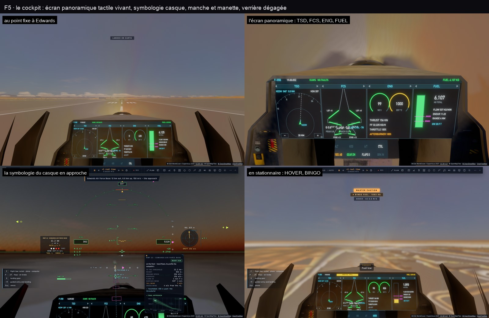
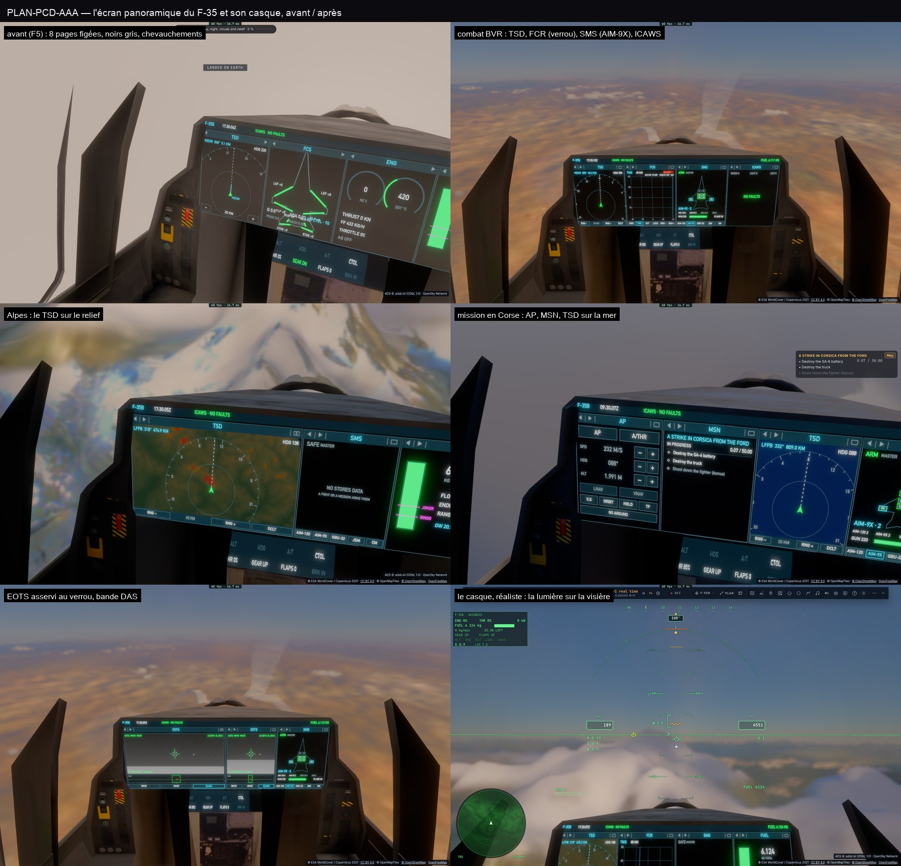
Lire le HUD par __bh
c.geoNow() // { lat, lon, alt (m mer), gs (m/s), track (rad), vs (m/s) }
c.airInfo() // { speed (m/s), mach, alpha, beta (rad), nz (g), stalled, aoaWarn, gear, flaps, … } — pas d'AGL
c.attitudeNow() // { pitch, bank, heading } en radians
c.jetModes // maintiens : alt (m mer), hdg (rad), spd (m/s) ; null = coupé
c.pilot.throttle, c.pilot.engineNow // la manette et la poussée réelle (0…1)
__bh.fleet.fuel.f35 // kgLeçon 3 — Décoller
- Aligné sur la piste. La manette à 0 freine toutes les roues.
- Z (W) plein gaz ; ⇧Z (⇧W) la postcombustion si la piste est courte (elle s'allume au sol ; seuls les maintiens exigent d'être en l'air).
- Tenir l'axe au lacet A/D (Q/D) par petites touches.
- Vers 70 m/s (≈ 135 kt) : S par petites pressions (ou Verr. Maj puis S), viser 10 à 12° d'assiette.
- Dès que ça monte : G rentre le train (8 s).
!c.rolling && !c.ourLanded), vitesse verticale > 5 m/s, ailes à plat, dans l'axe.Par __bh (la forme du test f35-flight-ops)
const c = __bh.camera;
c.__input ??= c.pilotInput.bind(c);
c.pilotInput = (pad) => { const i = c.__input(pad); // le manche, tiré à 0,8 au-dessus de 67 m/s
return (c.rolling || c.ourLanded) && (c.airFlight.last?.speed ?? 0) > 67 ? { ...i, pitch: 0.8 } : i; };
c.pilot.throttle = 1; c.jetToggle("ab");
for (let i = 0; i < 30 * 40 && (c.rolling || c.ourLanded); i++) __bh.step(1 / 30);
c.pilotInput = c.__input; c.gearDown = false;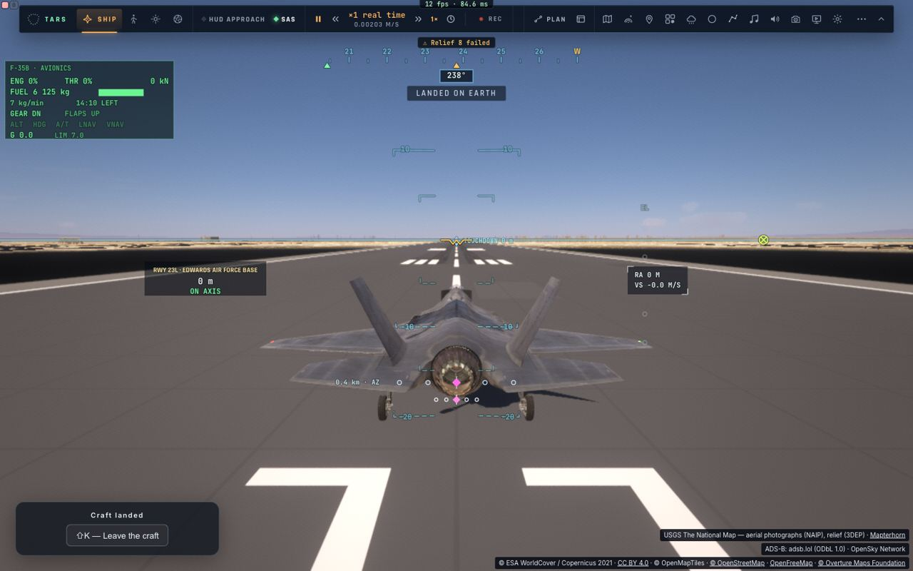
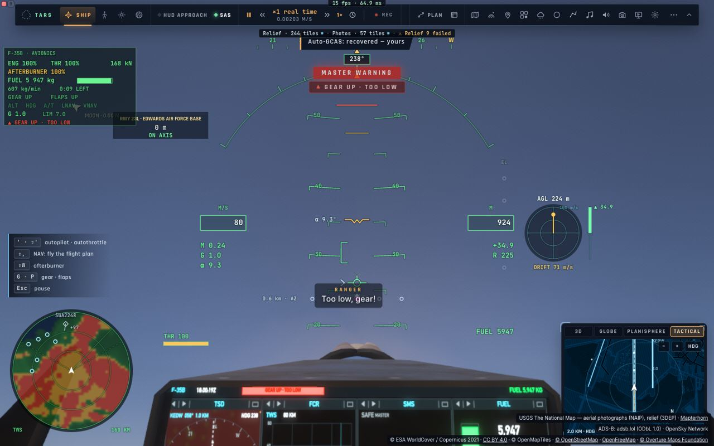
__bh.camera.runwayTakeoff().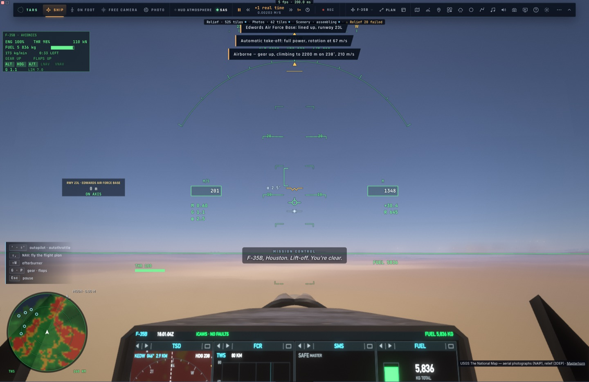
Leçon 4 — Tenir un palier, virer, monter, descendre
Les étapes de la leçon « Premier vol » de l'école : palier à 200 m/s, virage à 30°, montée de 500 m, puis à vous. En loi normale, l'avion garde la trajectoire qu'on lui laisse : on donne une petite impulsion, puis on lâche. L'attitude d'abord, l'altitude suit.
| Geste | Au clavier | Chiffres |
|---|---|---|
| Palier | vecteur vitesse sur l'horizon ; ⇧/Alt la puissance | 200 m/s |
| Virage (AP coupé) | Q/E (A/E) par petites pressions, lâcher vers 20° (le roulis acquis emmène ~10° de plus : mesuré 29° → 41°), puis la loi tient l'inclinaison et la pente — ne pas toucher S ; sortir ~5° avant le cap | 30° : ≈ 1,6°/s à 200 m/s (g·tan φ / V) |
| Montée | puissance et nez haut | +500 m ; palier commencé à 1/10 du taux de montée avant |
| Ralentir | puissance réduite, le nez monte peu à peu | 160 m/s |
| Autopilote | ' (ù) altitude et cap ; ⇧' auto-manette | Maj/Alt : ±10 m/s par seconde |
Par __bh : les maintiens
const c = __bh.camera;
for (let i = 0; i < 10; i++) __bh.step(1 / 30); // en l'air, en mode avion : maintiens acceptés
c.apSet({ ap: true, athr: true, alt: 3000, hdg: 90 * Math.PI / 180, spd: 200 }); // m mer, rad, m/s
// apSet se rappelle sans risque ; jetToggle("ap") BASCULE (un second appel coupe tout)
// écrire c.pilot.throttle pendant que l'auto-manette tient la désengageapSet : après 90 s, 3 000 m, 270°, 200 m/s exactement. Le virage à la main vers 000° : altitude 2 999–3 000 m sans toucher S ; touche de roulis tenue jusqu'à 29° → inclinaison finale 41° (d'où « lâcher vers 20° »).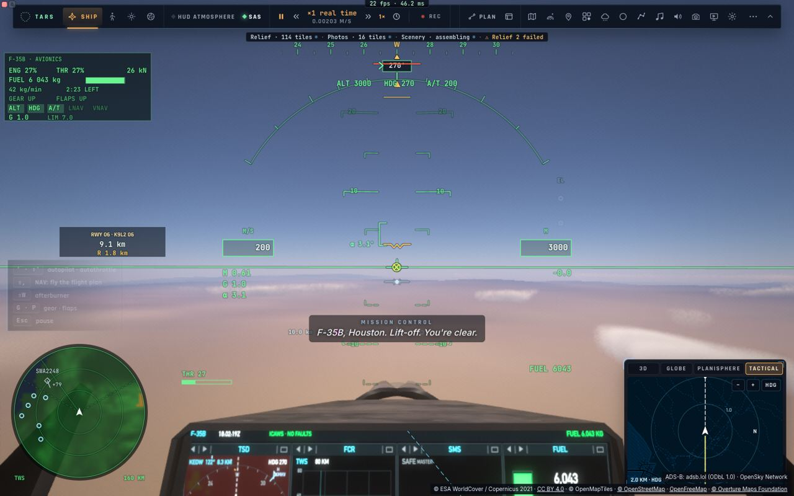
Leçon 5 — L'énergie, l'incidence et les limites
- Le chevron d'énergie à côté du vecteur vitesse : au-dessus des ailes on gagne de la vitesse, en dessous on en perd.
- L'Auto-GCAS (train rentré, hors loi directe) tire à 5 g et remet les ailes à plat quand le sol arriverait : deux chevrons qui se referment, puis
AUTO GCAS — FLY UP. L'Auto-ACAS évite un autre appareil. - En loi directe (Réglages › Jeu › F-35 › Loi de pilotage), plus de protection : la vrille devient possible ; on en sort en lâchant tout ~10 s.
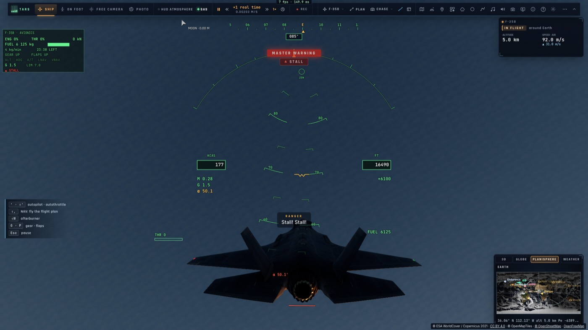
Leçon 6 — Le tour de piste et l'atterrissage
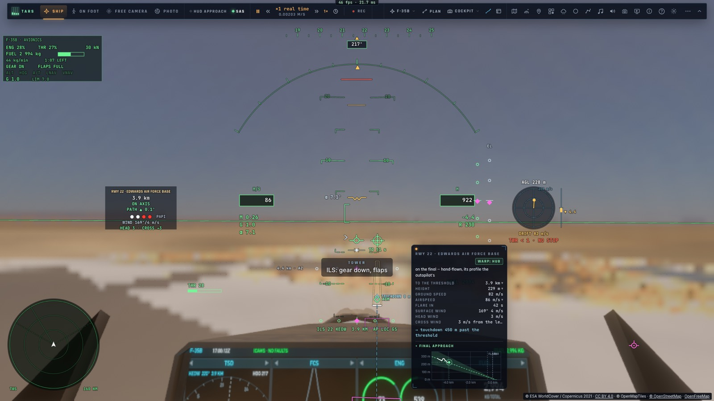
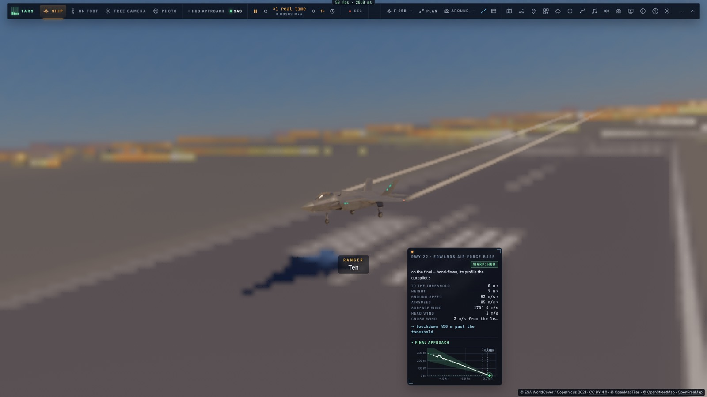
Leçon 7 — L'approche ILS
Conditions : un avion en l'air ; une piste nommée à toute distance, sinon la plus proche à moins de 150 km ; l'approche coupe l'autopilote en cours et vole elle-même jusqu'au point initial, l'alignement, la pente, l'arrondi ; elle refuse une pente qui rentre dans le relief.
Au clavier : Tab › Navigation › Approche ILS (la piste face au vent, ou une piste choisie dans la sous-roue). Toucher le manche ou la manette repasse en manuel. Stable aux minimums, on continue ; sinon remise de gaz droit devant.
Par __bh
const c = __bh.camera;
c.ilsRunways("KEDW"); // les pistes possibles, celle face au vent marquée
c.ilsStart("KEDW"); // toujours un message : "ILS approach: …" ou "ILS: …" (refus)
// avancer jusqu'à c.ilsRun === null ; c.ilsLast = { rwy, score, notes, touch: { along, across, vs } }
// réussi : 150 ≤ touch.along ≤ 900 m, |touch.across| < 8 m, touch.vs > -3 (vs est signé, négatif en descente)ilsStart("KEDW") depuis 12 km : 20/20, toucher à 470 m du seuil, 0,6 m de l'axe, −0,8 m/s.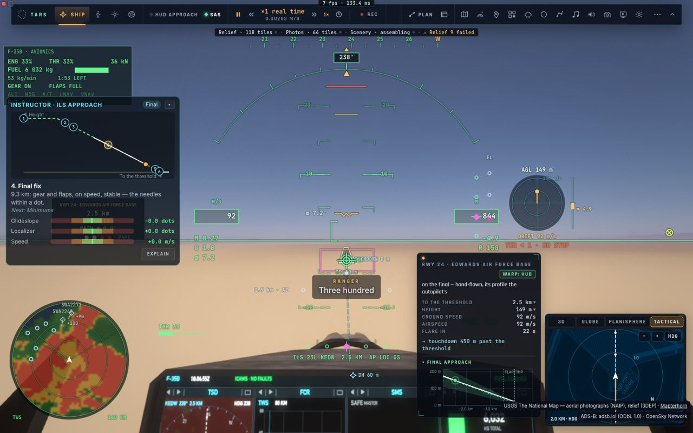
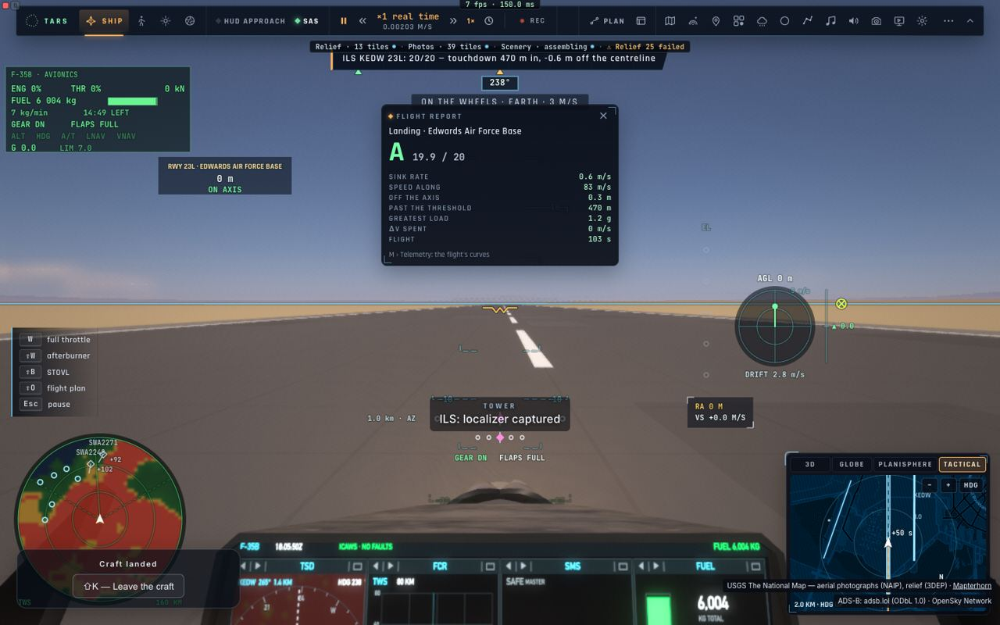
Leçon 8 — Le F-35B en stationnaire, le F-35C sur porte-avions
F-35B : STOVL
⇧B convertit en 6 s (trappes, soufflante, tuyère). Sous 65 m/s, la loi de stationnaire : le manche commande une vitesse sol, ⇧/Alt une vitesse verticale (±4 m/s), lâché, l'avion tient son point. Il tient en l'air sous ~17,8 t : brûler ~3 t de carburant avant un poser vertical.
carrierSpawn pose le navire 4 km devant où que l'on soit : se placer d'abord en mer. Sur un porte-avions : F7 l'appontage vertical (à moins de 30 km), U le décollage court ou vertical.
F-35C : catapulte et brins
U sur la catapulte (72 m/s en bout de course). F7 l'appontage : pente 3,5° sur le Ford, le « ball » de l'officier d'appontage, un brin arrête l'avion en 100 m à 4,5 g au plus. Taux de chute admis au toucher : 8 m/s.
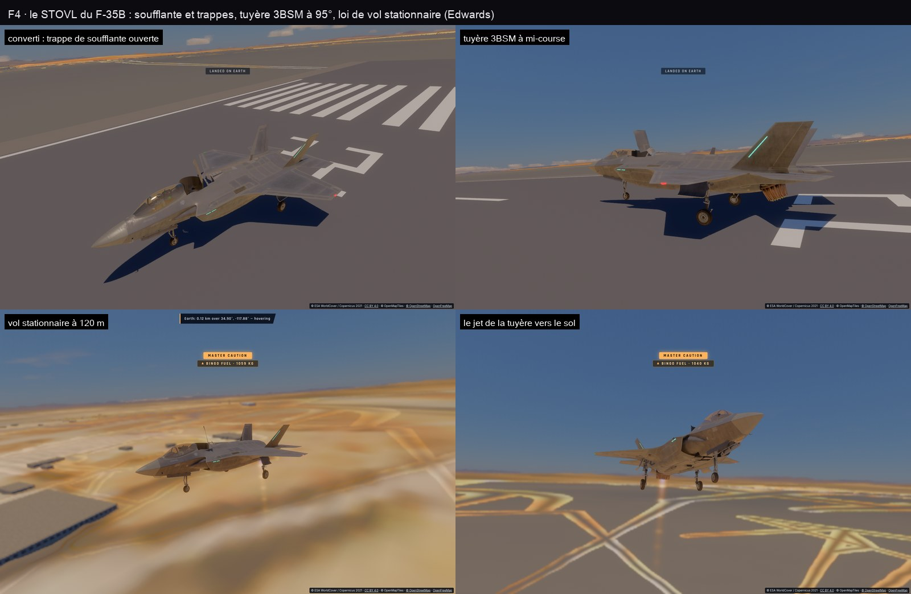
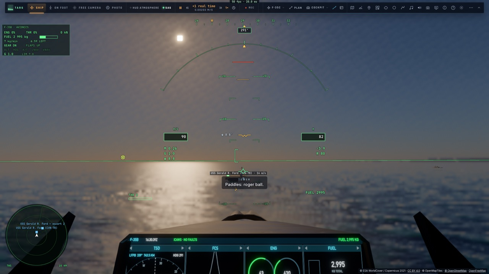
Par __bh
c.carrierSpawn("ford"); c.carrierFinal("ford", 3500, 90);
__bh.fleet.fuel.f35 = 1800; // assez léger pour le stationnaire
c.deckLand("ford"); // F-35B ; puis c.deckLast = { dx, dz, sink, grade }
// F-35C : __bh.settings.f35Variant = "C" (une image plus tard), c.catLaunch(0), c.trapLand("ford"), c.trapLastdeckLand("ford") (réessayé tant que la carte du pont charge) : posé à 0,5 m du point, 1,2 m/s, « OK ».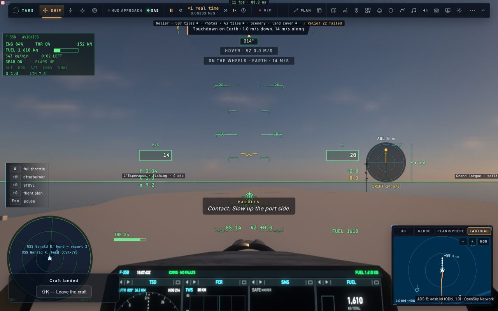
Leçon 9 — Naviguer : le plan de vol et la NAV
⇧O ouvre le plan de vol sur la carte : un clic ajoute un point (sur un aérodrome, l'aérodrome), son altitude et sa vitesse ; le carburant à l'arrivée et le bingo. ⇧M engage la NAV : LNAV suit les branches, VNAV la montée et une descente à 3° ; la fin du plan passe la main à l'ILS. Autres modes (Tab › Navigation › Modes du pilote automatique) : orbite, hippodrome, suivi de terrain à 100, 150 ou 300 m, ravitaillement en vol.
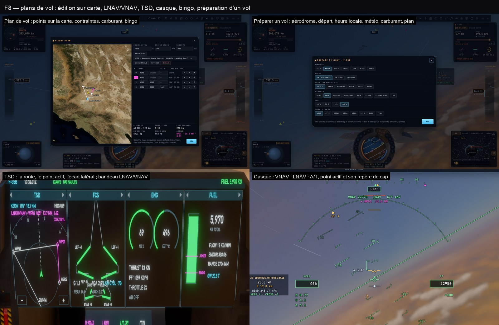
Leçon 10 — L'A320 : du seuil de piste à l'atterrissage automatique
Ses commandes de vol électriques (loi normale Airbus) commandent +2,5 / −1 g, tiennent la trajectoire manche lâché, limitent l'inclinaison à 67° et l'assiette à +30°/−15°, et le protègent de l'incidence et de la survitesse. Tout est lent : 15°/s de roulis, des volets qui mettent ~30 s à sortir. Vitesses en nœuds, altitudes en pieds.
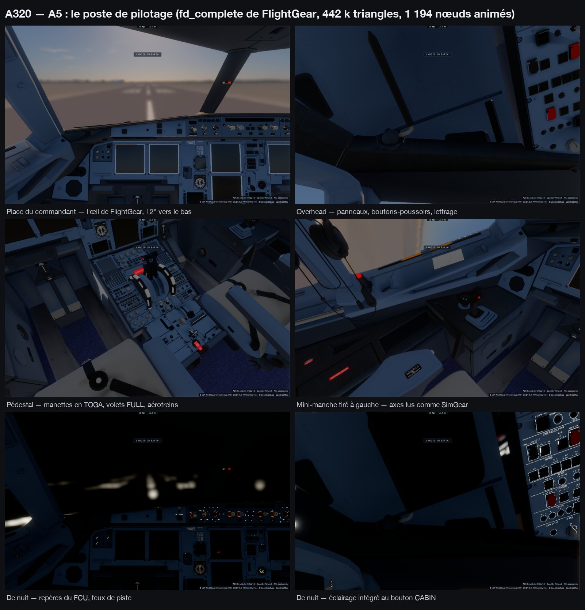
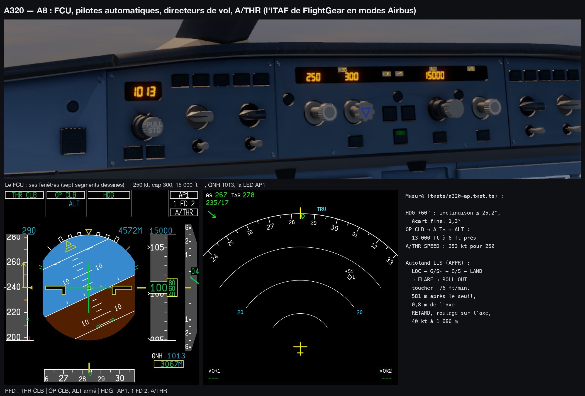
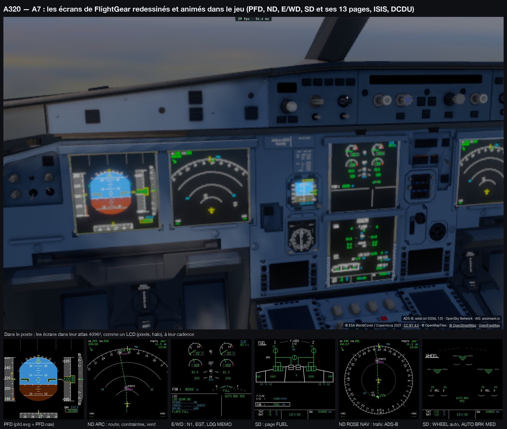
c.pilot.throttle). On décolle en FLX ou TOGA, puis on ramène en CL à 1 500 ft : l'A/THR gère alors la vitesse.Lire le FMA
La bande du haut du PFD dit ce que fait l'automatisme : poussée (MAN FLX, THR CLB, SPEED, IDLE), vertical (SRS, CLB, ALT*, ALT, G/S, LAND, FLARE), latéral (RWY, NAV, HDG, LOC, ROLL OUT). Un mode armé s'écrit en cyan sur la seconde ligne, un mode engagé en vert sur la première. Lire le FMA après chaque action.
Les vitesses du FMGC
V1 ≈ VR − 3 · VR ≈ 135 kt à la masse par défaut · V2 ≈ VR + 4 ; montée V2 + 10, puis 250 kt sous le FL100, puis ECON. À l'approche : green dot (≈ 2 × masse en t + 85 kt), S, F, puis VAPP = VLS + ⅓ du vent de face (5 à 15 kt de plus). Roulage : 30 kt en ligne droite, 10 kt en virage.
| Phase | Gestes | Chiffres |
|---|---|---|
| Au poste | Préparer un vol › départ à la porte ; tablette › Au sol : services ; Fin : repoussage | frein de parc |
| Préparation | démarrage ready ; P une fois au sol : CONF 1+F (P fait le tour 0 → 1 → 2 → 3 → FULL → 0) | CONF 1+F = becs 18°, volets 10° |
| Décollage | Z (W) = TOGA, ou le levier au cran FLX ; axe au lacet | V1 ≈ VR − 3 · VR ≈ 135 kt (64,8 t) · V2 ≈ VR + 4 |
| Rotation | à VR, S doucement jusqu'à 15° | ~3°/s |
| Montée | G train ; à 1 500 ft levier en CL (l'A/THR, déjà armé, devient actif) ; volets rentrés au levier du poste (P ne fait que monter) | — |
| Autopilote | ' AP1 — pas ⇧' : l'A/THR est déjà armé et serait coupé | AP1 ≥ 5 s après le décollage et ≥ 100 ft |
| Croisière | le FCU (cliquer le cockpit) ; ⇧M NAV | 250 kt sous le FL100 |
| Approche | volets jusqu'à FULL, G, Tab › Navigation › Approche ILS | FULL : becs 27°, volets 35° (~30 s) |
| Atterrissage | avec l'AP : LAND (400 ft), FLARE (50 ft), ROLL OUT ; ralenti | toucher < 3 m/s |
| Au sol | ⇧Z inverseurs · ⇧B autofrein · Fin repoussage · frein de parc : la poignée du poste | autofrein LO 1,7 · MED 3,0 m/s² |
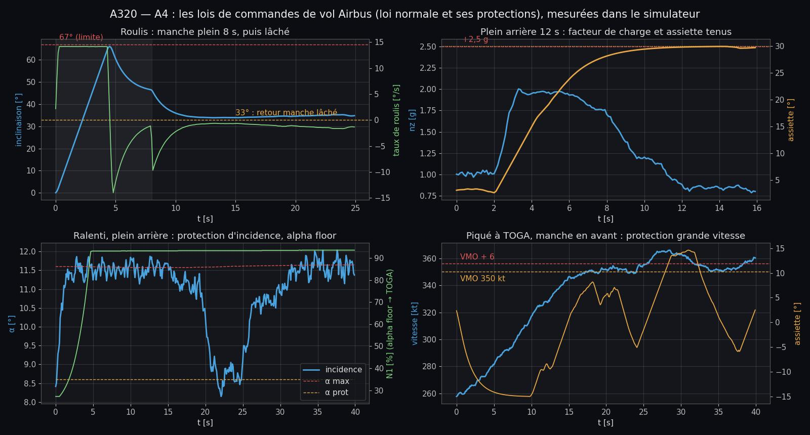
Par __bh
__bh.settings.vessel = "a320"; __bh.settings.a320Start = "ready"; // attendre __bh.fleet.active === "a320"
__bh.game.lineUp("Paris – Le Bourget"); // puis attendre de nouveau !!__bh.camera.a320Sys
const c = __bh.camera;
c.airFlight.cfg.flaps = 0.25; // levier / 4 (1 = FULL)
c.a320Park = false; c.pilot.throttle = 1; // TOGA ; le manche à VR (pilotInput)
// en l'air ≥ 5 s et ≥ 100 ft : c.a320ApKey("ap") ; l'A/THR est déjà armé ; le FMA : c.a320Fmgc.fma() ; FCU : c.a320Fmgc.altTurn(n), .hdgTurn(n), .spdTurn(n)
c.ilsStart("LFPB"); // l'A320 passe la main à son FMGC : la suivre par c.a320App (c.ilsRun reste nul), la note dans c.ilsLast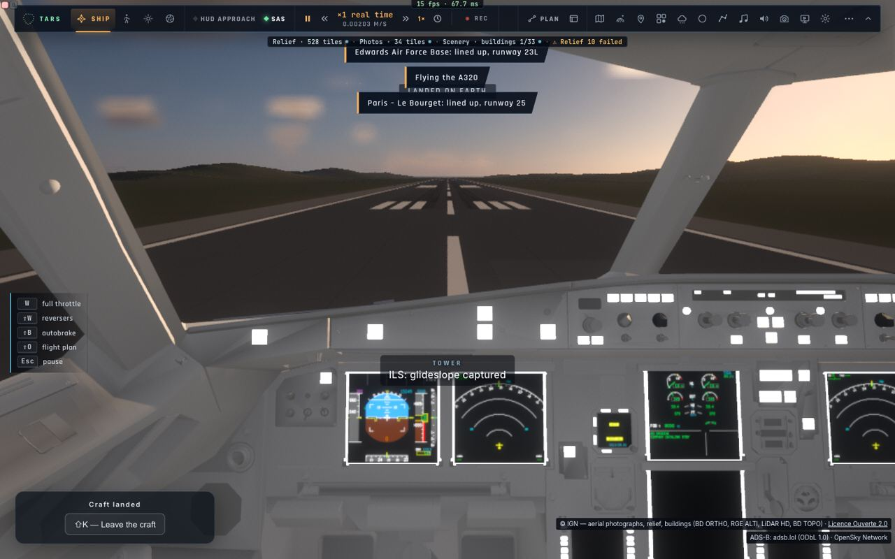
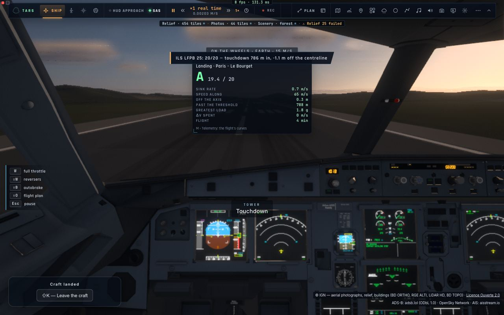
Leçon 11 — S'entraîner avec l'école de vol
Tab maintenu › Leçons et défis › École de vol : dix-huit leçons — premier vol, tour de piste, atterrissage, approche ILS, cas I et le ball, patrouille, interception, canon, dix figures de voltige. Démonstration (TARS vole tout en commentant), Guidé (TARS, puis vous), Essayer (vous, l'instructeur annonce les écarts et rend un débriefing noté sur 20).
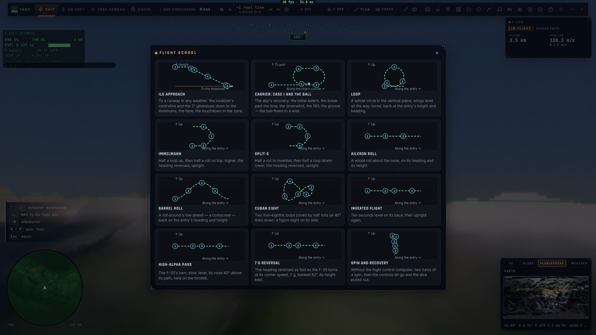
Progression conseillée : leçons 1 à 4 en Assisté · l'école « Premier vol » puis « Tour de piste » en Essai · « Atterrissage » et « Approche ILS » · passer en Réaliste · le F-35B, le F-35C · l'A320.
Par __bh
__bh.flight.school.demo("landing"); // aussi guided(id), tryIt(id) ; id : first, circuit, landing, ils, case1, …
__bh.flight.school.state(); // { step, steps, name, stepT, left, stalled, … } — à lire toutes les 2 sAide-mémoire — le clavier
| Avec ⇧ (Maj) | Quoi |
|---|---|
| ⇧W · ⇧X | postcombustion (A320 : inverseurs) · retour au vol stable |
| ⇧ù | auto-manette (A320 : A/THR) |
| ⇧M · ⇧O | NAV (le plan de vol volé) · le panneau du plan de vol |
| ⇧B · ⇧P | STOVL du F-35B (A320 : autofrein) · aérofrein |
| Tab · F6 · F7 · Fin · ⌫ | la roue (maintenu) ou le verrou radar suivant (bref) · TARS · atterrissage automatique (porte-avions) · repoussage (A320) · tout relâcher |
Aide-mémoire — les chiffres
| F-35B | F-35C | A320 | |
|---|---|---|---|
| Masse · carburant | 20,9 t · 6 125 kg | 24,9 t · 8 960 kg | 64,8 t · 8 000 kg |
| Poussée | 120 kN sec, 176 kN PC | idem | 2 × 120 kN |
| Facteur de charge | +7 / −3 g (4 g train sorti) | idem | +2,5 / −1 g |
| Rupture structurale | 10,5 g | 10,5 g | 3,75 g |
| Rotation au décollage | ≈ 70 m/s | catapulte 72 m/s | VR ≈ 135 kt |
| Approche | ≈ 81–92 m/s, pente 3° | pente 3,5° (Ford) | selon la masse |
| Toucher | ≤ 3 posé · ≤ 4,5 dur | jusqu'à 8 m/s | ≤ 3 posé · ≤ 4,5 dur |
| Train | 8 s par sens ; aucune vitesse limite appliquée | ||
Aide-mémoire — les pièges
- Un placement remet tout à zéro : manette 0, autopilote coupé, réservoirs pleins, volets rentrés. Un jet placé en l'air à manette 0 plane jusqu'au sol : engager l'auto-manette.
jetTogglebascule : un second appel coupe tout. UtiliserapSet.- L'altitude est au-dessus de la mer : la hauteur sol se lit à la radiosonde (ou
sys.heightOverGround). - Un crash met le jeu en pause (écran « craft lost ») : un bouton de l'écran, ou un nouveau placement puis la fermeture de l'écran.
- Échap ouvre la pause : ne pas s'en servir pour fermer un écran.
- Le détail, et les tests : E2E-VOLS.md · la référence : VOL-AVIONS.md.
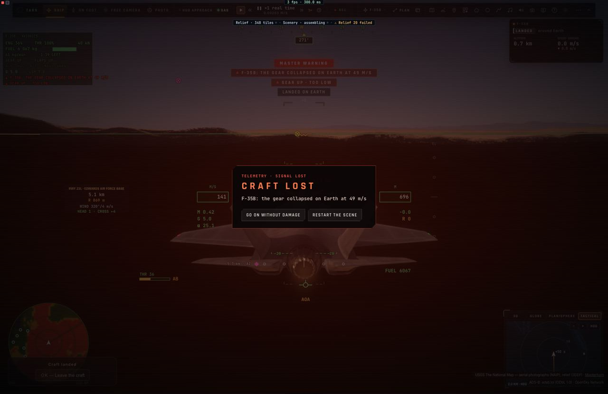